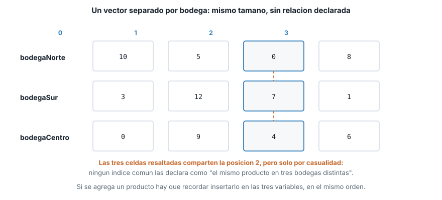
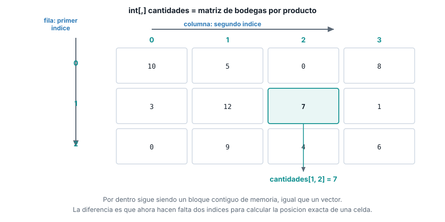
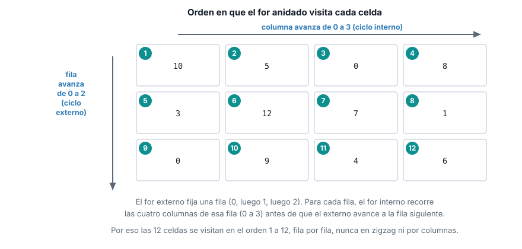

Unidad 2. Matrices
| Asignatura | Herramientas de Programación I (ET0047) |
| Programa | Tecnología en Desarrollo de Software |
| Unidad | Unidad 2. Creando aplicaciones informáticas utilizando arreglos y funciones |
| Saber | Estructura de datos tipo vectores y matrices |
Esta guía se probó con el SDK de .NET 10.0.302.
1 El problema que resuelve una matriz
El tema anterior dejó al vector precios guardando los precios de varios productos, todos en la misma bodega. El proyecto del semestre ahora necesita algo más: el sistema de gestión debe llevar la cantidad de cada producto, pero repartida en varias bodegas. Con 4 productos y 3 bodegas, eso son 12 números que registrar, y cada uno tiene que quedar ligado a dos cosas a la vez: a qué producto pertenece y en qué bodega está.
Con lo que ya sabes de vectores, la primera idea es declarar un vector por bodega:
int[] bodegaNorte = { 10, 5, 0, 8 };
int[] bodegaSur = { 3, 12, 7, 1 };
int[] bodegaCentro = { 0, 9, 4, 6 };
Console.WriteLine($"Cantidad del producto 2 en Bodega Sur: {bodegaSur[2]}");Cantidad del producto 2 en Bodega Sur: 7El programa funciona: bodegaSur[2] sí devuelve la cantidad del producto correcto. El problema no es un error de ejecución, es un error de diseño que se paga después. Cada bodega vive en su propio vector, del mismo tamaño por pura disciplina del programador, no porque el lenguaje lo exija. Ningún vínculo declarado le dice a C# “la posición 2 de estos tres vectores es el mismo producto”: si mañana llega un cuarto producto, hay que recordar agregarlo en las tres variables, en el mismo orden, y nada avisa si te olvidas de una. Tres vectores paralelos son tres oportunidades de desincronizarlos.

Lo que hace falta es una sola estructura que agrupe las 12 cantidades bajo un nombre, donde cada valor se identifique con dos coordenadas a la vez: la bodega y el producto. Esa estructura es la matriz.
2 Qué es una matriz
Una matriz (array de dos dimensiones en C#) es una estructura de datos que guarda una colección de elementos del mismo tipo organizados en filas y columnas, donde cada elemento se identifica con dos índices: matriz[fila, columna].
Todo lo que ya sabes de un vector se mantiene igual, solo que ahora con dos coordenadas en vez de una:
- Mismo tipo. Una matriz de
intsolo guardaint, igual que un vector. - Bloque contiguo. Por dentro, C# sigue guardando la matriz en un único bloque continuo de memoria. El tamaño se fija al crearla, igual que con un vector.
- Acceso por índice, ahora doble. El primer índice ubica la fila (en el proyecto, la bodega). El segundo ubica la columna (el producto). Los dos juntos, separados por una coma dentro de los mismos corchetes, ubican una celda exacta.

Este es el mismo bloque de memoria contiguo que viste con los vectores. La diferencia está en cómo se calcula la posición: con un índice, C# calcula un desplazamiento; con dos, calcula el desplazamiento combinando fila y columna. Esa cuenta la hace el lenguaje por ti; lo único que necesitas manejar es la notación [fila, columna].
Esta guía usa matrices rectangulares (int[,]), donde todas las filas tienen el mismo número de columnas, como una cuadrícula real. C# también tiene arreglos “irregulares” (int[][], un vector de vectores donde cada fila puede tener un tamaño distinto), pero eso no forma parte del saber de esta unidad y no lo vas a necesitar en el proyecto del semestre.
3 Declaración, creación e inicialización
La sintaxis de una matriz rectangular se distingue de la de un vector por una sola coma dentro de los corchetes: int[,] en vez de int[]. Esa coma es la que le dice al compilador “esto tiene dos dimensiones”.
Tamaño fijo, valores por defecto
int[,] vacia = new int[3, 4];
Console.WriteLine($"Filas: {vacia.GetLength(0)}, columnas: {vacia.GetLength(1)}");
Console.WriteLine($"Valor por defecto en [0,0]: {vacia[0, 0]}");Filas: 3, columnas: 4
Valor por defecto en [0,0]: 0new int[3, 4] reserva una cuadrícula de 3 filas por 4 columnas (12 celdas en total) y las llena con el valor por defecto del tipo, igual que hacía new int[5] con un vector. Úsala cuando conoces las dimensiones pero vas a llenar los valores después, por ejemplo leyéndolos por consola dentro de un for anidado.
Valores literales, fila por fila
int[,] cantidades = {
{ 10, 5, 0, 8 },
{ 3, 12, 7, 1 },
{ 0, 9, 4, 6 }
};
Console.WriteLine($"Filas (bodegas): {cantidades.GetLength(0)}");
Console.WriteLine($"Columnas (productos): {cantidades.GetLength(1)}");Filas (bodegas): 3
Columnas (productos): 4Cada par de llaves internas es una fila. El compilador exige que todas las filas traigan la misma cantidad de valores: si una fila trae 3 números y otra trae 4, no compila, porque una matriz rectangular no admite filas de tamaño distinto. Esta es la forma que vas a usar más seguido cuando ya conoces los datos al escribir el programa, por la misma razón que el inicializador corto de vectores: es la más legible y el tamaño se deduce solo.
GetLength contra Length: el error que hay que anticipar
Console.WriteLine($"cantidades.Length (total de celdas): {cantidades.Length}");cantidades.Length (total de celdas): 12Esta es la trampa más común al pasar de vectores a matrices. En un vector, .Length es exactamente lo que necesitas para recorrerlo: el número de posiciones. En una matriz, .Length no distingue filas de columnas: devuelve el total de celdas (3 por 4 = 12), un número que no sirve para controlar un for de filas ni uno de columnas por separado. Para eso existen GetLength(0) (número de filas) y GetLength(1) (número de columnas), que ya usaste arriba. Si escribes for (int i = 0; i < cantidades.Length; i++) esperando recorrer las filas, el ciclo va a dar 12 vueltas en vez de 3, y cantidades[i, 0] va a lanzar IndexOutOfRangeException en cuanto i pase de 2.
4 Recorrer una matriz
Recorrer una matriz completa exige dos ciclos for anidados: uno para las filas, otro para las columnas dentro de cada fila. El ciclo externo controla la fila; el ciclo interno, anidado dentro del externo, recorre todas las columnas de esa fila antes de que el externo avance a la siguiente.
for (int fila = 0; fila < cantidades.GetLength(0); fila++)
{
for (int columna = 0; columna < cantidades.GetLength(1); columna++)
{
Console.Write($"{cantidades[fila, columna],4}");
}
Console.WriteLine();
} 10 5 0 8
3 12 7 1
0 9 4 6
{cantidades[fila, columna],4} es un formato de alineación de string interpolado: reserva 4 espacios para el número, para que la cuadrícula quede alineada en la consola sin importar si el valor tiene uno o dos dígitos. Console.WriteLine() sin argumentos, al cerrar el ciclo interno, solo imprime el salto de línea que separa una fila de la siguiente.
Sumar una columna: el total de un producto en todas las bodegas
Cuando necesitas solo una columna, fijas ese índice y dejas que el for recorra únicamente las filas:
int columnaProducto = 2;
int totalProducto = 0;
for (int fila = 0; fila < cantidades.GetLength(0); fila++)
{
totalProducto += cantidades[fila, columnaProducto];
}
Console.WriteLine($"Total del producto {columnaProducto} en todas las bodegas: {totalProducto}");Total del producto 2 en todas las bodegas: 11Aquí columnaProducto queda fijo en 2 durante todo el ciclo: lo único que cambia es fila. Es la misma idea de “una columna vertical de la cuadrícula”, leída de arriba hacia abajo.
Sumar el total general
Para sumar las 12 celdas hace falta volver a los dos ciclos anidados, acumulando en cada vuelta del ciclo interno:
int totalGeneral = 0;
for (int fila = 0; fila < cantidades.GetLength(0); fila++)
{
for (int columna = 0; columna < cantidades.GetLength(1); columna++)
{
totalGeneral += cantidades[fila, columna];
}
}
Console.WriteLine($"Total general del inventario: {totalGeneral}");Total general del inventario: 655 Acceder y modificar una celda
Leer o escribir una celda concreta usa la misma notación de dos índices, a la izquierda o a la derecha de un =, igual que ya viste con un solo índice en un vector:
Console.WriteLine($"Cantidad original en [1,2]: {cantidades[1, 2]}");
cantidades[1, 2] = 20;
Console.WriteLine($"Cantidad actualizada en [1,2]: {cantidades[1, 2]}");Cantidad original en [1,2]: 7
Cantidad actualizada en [1,2]: 20cantidades[1, 2] = 20 reemplaza, no suma: la celda queda en 20, no en 7 + 20. Es el mismo comportamiento que precios[2] = 7990.00 en el tema anterior, con un índice más.
6 Lo que sigue: funciones
El código de esta guía ya se repitió varias veces: el for anidado para recorrer la matriz completa aparece igual en la sección de recorrido y en la del total general, y volvería a aparecer si el proyecto necesitara imprimir el inventario en otro punto del programa. El siguiente tema enseña a empacar ese bloque de código en una función, para escribirlo una sola vez y llamarlo cada vez que haga falta, con los datos de entrada y el resultado que necesite cada llamada.
7 Lista de verificación
8 Recursos
- Arreglos multidimensionales: learn.microsoft.com/dotnet/csharp/programming-guide/arrays/multidimensional-arrays
Array.GetLength: learn.microsoft.com/dotnet/api/system.array.getlength- Formato de alineación en cadenas interpoladas: learn.microsoft.com/dotnet/csharp/language-reference/tokens/interpolated
Herramientas de Programación I (ET0047). Institución Universitaria Pascual Bravo. Facultad de Ingeniería. Semestre 2026-02.
Transparencia. La redacción de esta guía contó con el apoyo de inteligencia artificial, usando el modelo Claude Sonnet 5 de Anthropic. Todo el contenido fue revisado y validado. Las salidas de terminal son reales, obtenidas ejecutando el código exacto de esta guía contra el SDK de .NET 10.0.302.